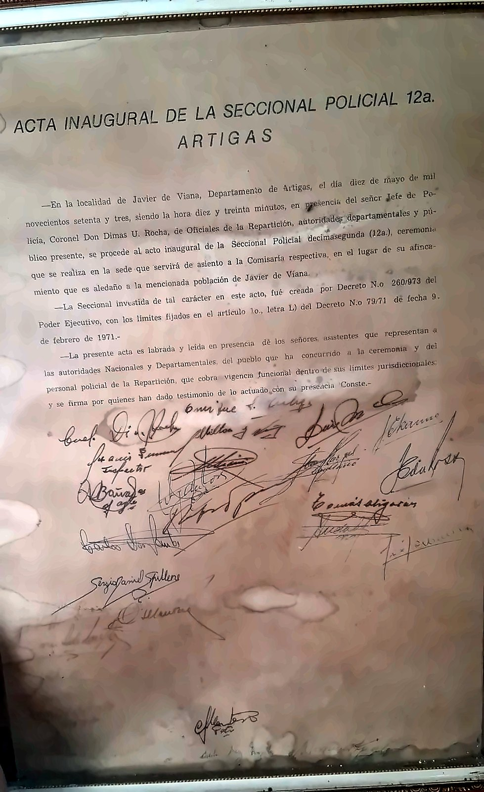
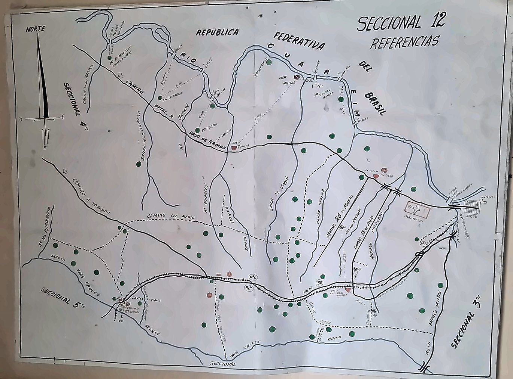

Una institución con historia
El Destacamento Policial N.º 12 está sobre la Ruta 30, en el kilómetro 97, en Javier de Viana. Fue inaugurado oficialmente el 10 de mayo de 1973, a las 10:30, como Seccional Policial 12.ª de Artigas.
La ceremonia contó con la presencia del entonces jefe de Policía de Artigas, coronel Dimas U. Rocha, de oficiales de la repartición, de autoridades departamentales y de vecinos de la localidad.
Creación y jurisdicción
Su creación fue establecida por el Decreto del Poder Ejecutivo N.º 260/973, con la jurisdicción delimitada por el Decreto N.º 79/71, del 9 de febrero de 1971.
El viejo mapa de referencias de la seccional muestra su zona: se extiende entre el arroyo Tres Cruces y el río Cuareim, en la frontera con Brasil.
Al servicio de la comunidad
Con 53 años de historia, es una institución importante para Javier de Viana: forma parte de su patrimonio histórico y de la vida de la comunidad.
- Encargada actual: agente Lorena Paz.
- Teléfono fijo: 4770 2242.
- Celular: 099 325 840.
Fotos

Foto: CEI Javier de Viana

Foto: CEI Javier de Viana